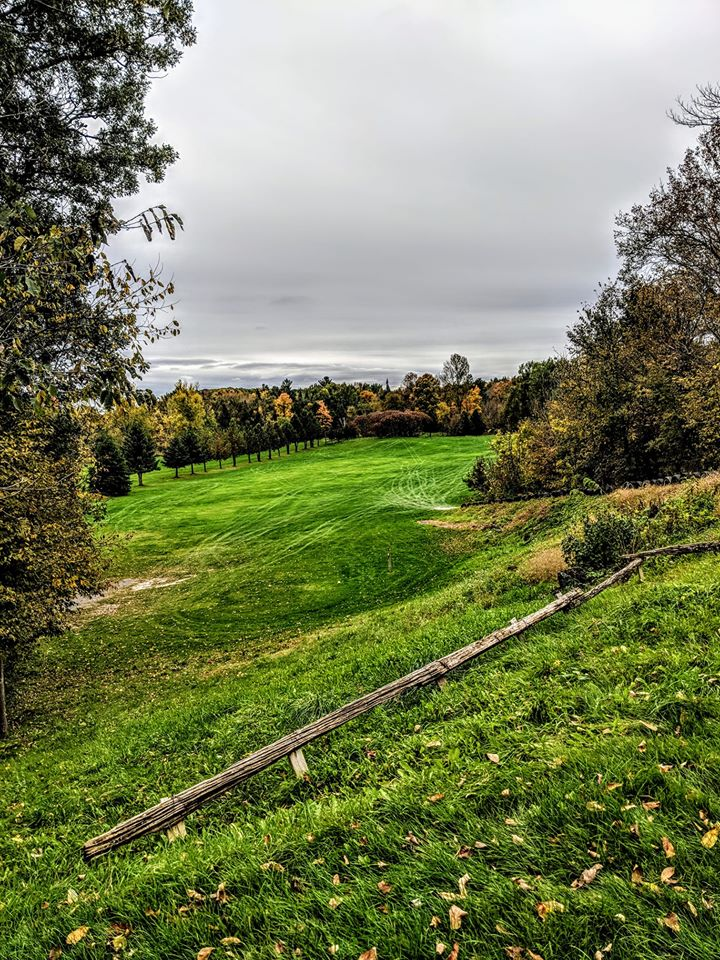

<div class="nav-margin">
    <div class="card mb-3" >
        <div class="row no-gutters">
          <div class="col-md-7">
            <div class="card-body">
              <h5 class="card-title">COVID-19</h5>
              <p class="card-text">
                We are happy to announce that Premier Ford and the Ontario 
                Government has recognized the need for safe outdoor activities 
                like golf.  At the same time we recognize that it is CRITICAL 
                that we continue to be safe in 2021.  Please ensure that you 
                adhere to the following:
                <p><u>Physical Distancing</u> - all players must stay at least 6 feet apart (ie. Two club lengths).  If not able to do this, a mask must be worn</p>
                <p><u>Flag poles </u> - do not touch or remove.  Hole are fitted with a blocker so that your ball will not go in.</p>
                <p><u>Masks on Carts Rule</u> - If two riders from different households are riding on a cart, you MUST wear a mask while on the cart.  As a second precaution when talking to each other look in the other direction.</p>
                <p><u>Gatherings</u> - There is a maximum outdoor gathering limit of 5 people.  Pre or post game gatherings are not aloud until further notification.  Limit of 3 people in the club house at one time.</p>
                <p><u>Food</u> - sandwiches & snacks can be pre ordered when you sign in before your round or bought from the refreshment cart.</p>
                <p><u>Beverages</u> -  can be bought when you sign in for your round or from the refreshment cart on the golf course.</p>
                <p><u>Pro Shop</u> - Only 3 people in the pro shop at a time.  Please be patient.  Masks must be worn in the pro shop.  Please sanitize your hands before entering.</p>
                <p><u>Golf Carts</u> - return golf carts to the “return” area.  <b>Remove your score card and all garbage!</b>  Leave key in the cart before you exit.</p>
                <p><u>Score Cards</u> - will be provided - please bring your own pencil.</p>

                <p class="card-text"><small class="text-muted">- West Highland Golf Course</small></p>
            </div>
          </div>
          <div class="col-md-5 card-img-container">
            
          </div>
        </div>
      </div>
</div>